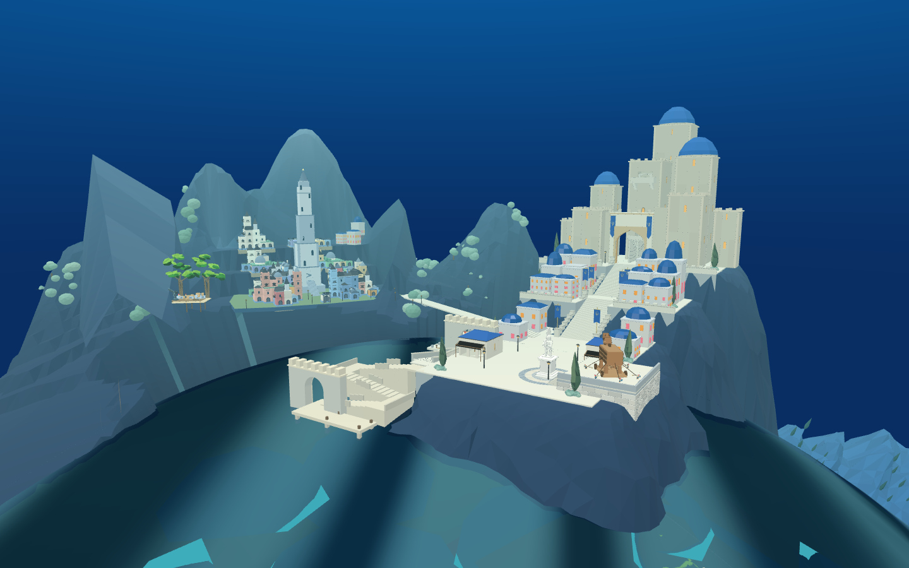
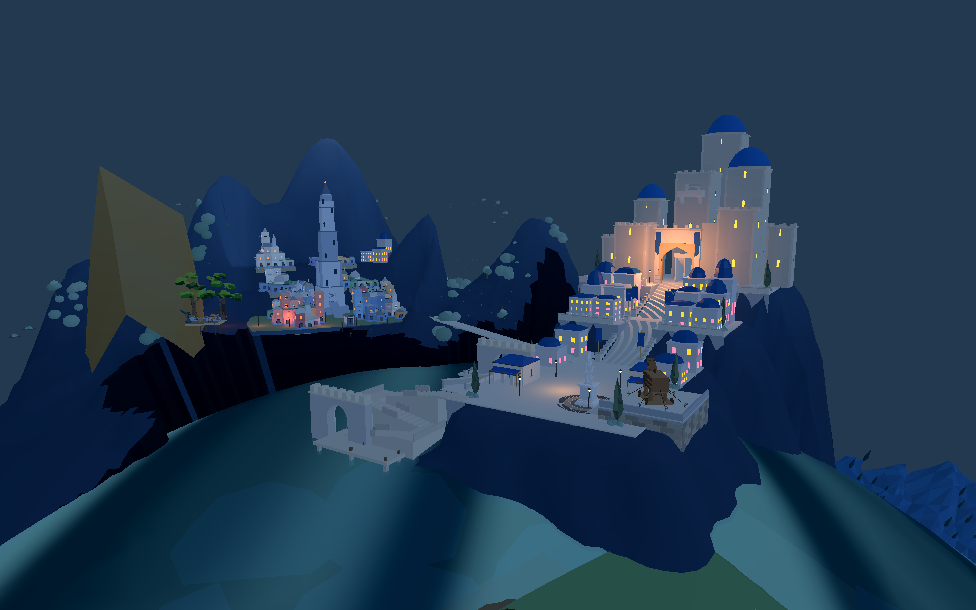
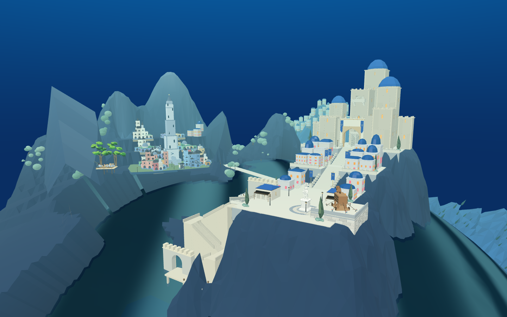

原来的蓝色尖片来自出生营地的浅海色块。现在把这 11 块原几何贴在真实三角海面下方；沙滩、地形和碰撞保持原样。已接入默认原游戏，并同步同一 Godot 工程。
打开原游戏 · 圣城共同基准候选 · Web 检查 · Godot 默认检查 · Godot 候选检查
两种布局各检查 7,260 个面内及边界点，含最大波谷，最小水下净距约 27 / 26 厘米。未改海水高度和透明度。旧港高度、山体大尖面、Godot 异色面仍未完成，不将本次修复算作整个圣城交付。


